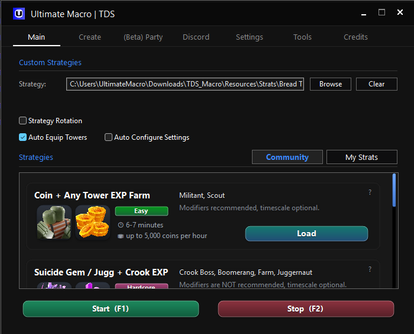

Capture the moves while you play.
Win more.
Play less.
Ultimate Macro is designed for those who want to achieve more in Tower Defense Simulator without spending every run doing the same work.
Free & open sourceWindows · AutoHotkey v2

THE CORE LOOP
Record once.
Use it again.
Keep a good TDS sequence close: capture the actions, check the order and replay the run when you want the repetition out of the way.
Load the same sequence when you need it again.
Keep community strategies in the same file format.
AROUND THE RUN
Once you press start,
it follows through.
From the first tower to the end screen, the macro keeps the sequence moving and tells you where it landed.
Get towers ready and check the map.
Play back placements, upgrades, abilities and inputs.
Handle restarts, replays and reconnects when available.
Send the useful parts to Discord.
THE PARTS THAT MATTER
The boring bits
stay out of the way.
Keep the good run, hand off the repetition and spend your time on the parts that actually need you.
Keep a complete run
Record placements, upgrades, selling, repositioning, target changes and abilities in one strategy file you can come back to.
Let the match move
Equip towers, check the map, handle match endings and use Restart or Play Again when the flow calls for it.
Start from someone else's work
Load community-made .strat files, rotate them by run or time and try the 1.5× or 2× timescale modes.
BEFORE THE FIRST RUN
Give it a clean start.
Then leave it alone.
There are only a few things to line up before the macro can read the game and follow the strategy.
01
Download the release
Get the latest ZIP and extract the complete folder somewhere easy to find.
02
Install AutoHotkey v2
Install AutoHotkey 2.0. The older 1.1 release is not supported.
03
Open Main.ahk
Match the TDS settings, choose a strategy and start when Roblox is ready.
THE STRATEGY RECORDER
Keep the good run.
Make it a file.
Capture the sequence once, look over it later and run it again when you need it.
EXAMPLE RUNRecording00:04:21
00:02SPAWN TOWERMinigunner1 · Slot 1
00:11UPGRADE TOWERMinigunner1 · Path 2
00:19CHANGE DJ TRACKDJ · Track 2
00:33USE ABILITYCommander · Call of Arms
Ready when you are
THE READY CHECK
Give it the same screen
every time.
The macro reads what is on screen. These settings remove the small differences that make a run harder to follow.
Before you press play
A FEW QUESTIONS
Before you
start a run.
The short version of what it does, what it needs and where to look next.
Come say hi in Discord ↗What does it actually do?
It records and replays the parts of a TDS run you would rather not do twice: placements, upgrades, selling, repositioning, target changes and abilities. It can also rotate strategies, equip towers and handle the end of a match.
How do I make a strategy?
Play a run, record the actions you want to keep, then save them as a .strat file.
What happens when a match ends?
When a match ends, it can use Restart or Play Again when appropriate, verify the selected map and continue with the next run.
What should I set up first?
Use Windows 10 or 11, install AutoHotkey v2.0 and the English (US) OCR language pack, set Windows scaling to 100% and match the TDS settings in the ready check.
Can I use a community strategy?
Yes. Download a community-made .strat file and load it in the macro.
Which download is for me?
For a ready-to-use install, download the latest ZIP from the official releases. The main branch is the runtime tree; the dev branch is for development.
Is this affiliated with Roblox?
Ultimate Macro is not affiliated with Roblox Corporation or Paradoxum Games.
THE PROJECT
Built in the open.
Shared by players.
Find the latest releases, community strategies, setup help and recorded sessions in the places the project actually lives.
Original creator · DarksenLead developer · pizzaroles24License · GPL-3.0
READY WHEN YOU ARE
Run it once.
Come back to it.
Download the package, match the setup and keep the strategy that worked.
ULTIMATE MACRO●
Latest releaseWindows · AutoHotkey v2.0
Open the download page ↗Free and open source · Use responsibly